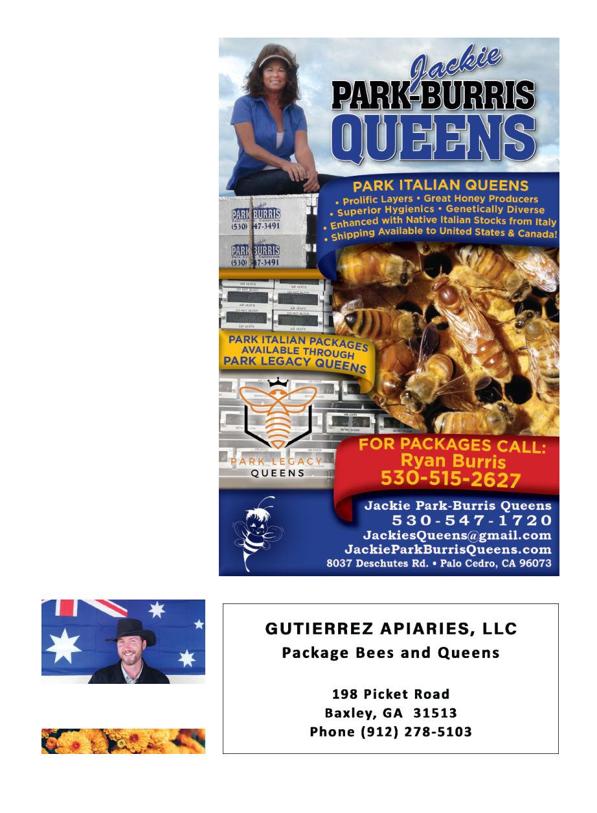

October 2024
1127
limiting factor, which is all the more
argument for providing water sourc-
es to your bees on hot days, perhaps
both near the hive and if possible
along their path to foraging. I thank
Dr. Glass for conducting this useful
research, and particularly for sharing
it with me so I can share it with you.
A version of this article first appeared
in the August 2024 issue of the Austral-
asian Beekeeper.
References
1 Glass, J.R. et al. (2024) Flying, nectar-
loaded honey bees conserve water and im-
prove heat tolerance by reducing wingbeat
frequency and metabolic heat production,
Proceedings of the National Academy of Sci-
ences, 121(4).
https://www.pnas.org/
doi/abs/10.1073/pnas.2311025121.
2 Dudley, R, C.P. Ellington, Mechanics of
forward flight in bumblebees: II. Quasi-
steady lift and power requirements. J.
Exp. Biol. 148, 53–88 (1990).
3 Winston, M.L., The Biology of the Honey Bee
(Harvard University Press, Cambridge,
MA, 1991).
4 Lindauer, M. (1955). The water economy
and temperature regulation of the honey-
bee colony. Bee World 36, 81-92. https://
doi.org/10.1080/0005772X.1955.11094876
5 Kovac, H., H. Käfer, A. Stabentheiner,
C. Costa, Metabolism and upper thermal
limits of Apis mellifera carnica and A. m. li-
gustica. Apidologie 45, 664–677 (2014).
6 Berndt Heinrich, “Keeping a Cool Head:
Honey Bee Thermoregulation” SCIENCE,
21 Sep 1979 Col 105, Issue 4412 pp. 1269-
1271
7 Burdine, J.D., K.E. McCluney, Differential
sensitivity of bees to urbanization-driven
changes in body temperature and water
content. Sci. Rep. 9, 1–10 (2019).
8 Glass, J.R., J.F. Harrison, The thermal
performance curve for aerobic metabolism
of a flying endotherm. Proc. R Soc B 289,
20220298 (2022).
Kris Fricke is the editor of the Australasian
Beekeeper, Australia’s national beekeeping
magazine. He is originally from Southern Cali-
fornia.